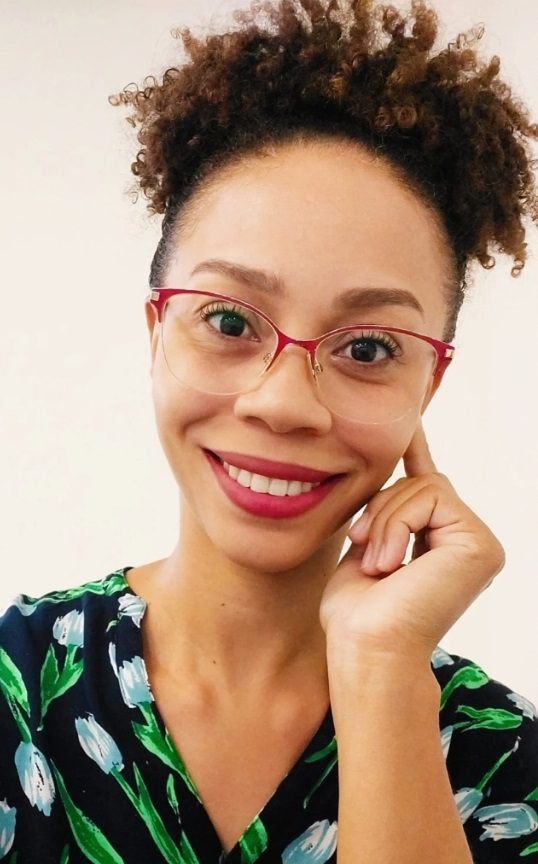

Eleve seu negócio digital a outro nível com um Front-end de qualidade!
Olá! Eu sou Andréia Manoel, uma estudante do
Curso Técnico em Análise e Desenvolvimento de Sistemas. Estou participando de uma formação em Front-end
pela Oracle, em parceria com a Alura.Essa combinação de habilidades me permite oferecer à sua empresa
uma contribuição significativa em
diversas áreas. Abaixo estão algumas maneiras pelas quais meu curso e formação podem beneficiar a
empresa:
Desenvolvimento de Sistemas Eficientes: Adquiri habilidades em programação e
análise de sistemas, capacitando-me a contribuir para o desenvolvimento de sistemas eficientes e de
alta qualidade, adaptados às necessidades específicas da empresa.
Experiência em Desenvolvimento Front-end: Minha formação em Front-end pela Oracle e
Alura me fornece habilidades especializadas na criação de interfaces de usuário atraentes e
funcionais, contribuindo para o desenvolvimento de experiências excepcionais em interfaces web e
aplicativos móveis.
Resolução de Problemas e Inovação: Meu curso técnico está me capacitando a
desenvolver habilidades de resolução de problemas e pensamento analítico, permitindo-me identificar
e solucionar desafios complexos de forma eficaz e contribuir com ideias inovadoras para aprimorar
processos e produtos empresariais.
Com isso espero que veja o potencial que trago para agregar valor a sua empresa, tanto em termos de
habilidades técnicas quanto de habilidades interpessoais e de resolução de problemas.Vamos
conversar?

.png) Linkedin
Linkedin